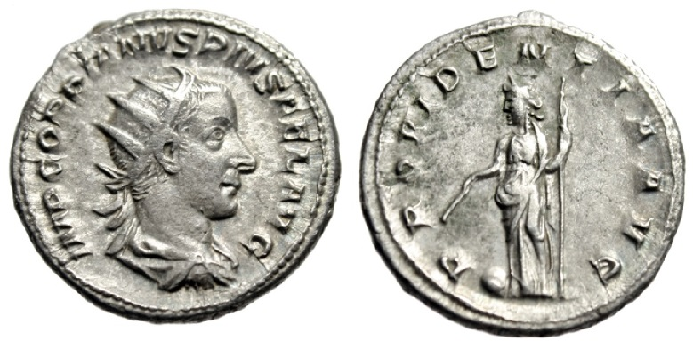

Joseph's Ancient Coins
Gordian III
AR Antoninianus

243 - 244 A.D., Rome Mint
4.80g, 22.0mm, 1H
Obverse: IMP GORDIANVS PIVS FEL AVG, Bust of Gordian III, radiate, draped, cuirassed, facing right
Reverse: PROVIDENTIA AVG, Providentia, draped, standing left, holding wand in right hand over globe set on ground and sceptre in left hand
Reference: RIC IV 150